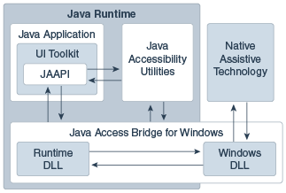

4 Java Access Bridge Architecture
Java Access Bridge consists of a package of classes and DLLs, which enable communication among assistive technologies and Java applications.
The following figure shows how Java Access Bridge and Java Accessibility Utilities components interact with each other:
Figure 4-1 Java Access Bridge Architecture Diagram
Description of "Figure 4-1 Java Access Bridge Architecture Diagram"
Java Access Bridge provides a subset of the Java Accessibility API through the Windows\System32\windowsaccessbridge-64.dll Windows DLL. Assistive technologies on Microsoft Windows load and link to this DLL. Java Access Bridge also provides javaaccessbridge.dll, which the Java runtime loads. This DLL communicates with the application through the Java Accessibility API and through it, the user interface toolkit and components. The DLL also communicates with the application through Java Accessibility Utilities, a collection of classes that coalesce events and provide application lifecycle functionality to assistive technologies (and to Java Access Bridge, which acts as an assistive technology); see Java Accessibility Utilities Overview. The Java component of Java Access Bridge, manages communication between the DLL loaded into the Java runtime and the other Java code in the Java runtime. The Java component of Java Access Bridge is loaded into the Java SE runtime through what is specified in the assistive_technologies property (see Accessibility Properties) and in turn loads the Java-side DLL through Java Native Interfaces (JNI). The communication that Java Access Bridge enables between assistive technologies and Java applications through Java Accessibility Utilities is called interprocess communication.